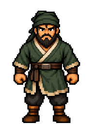
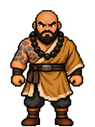
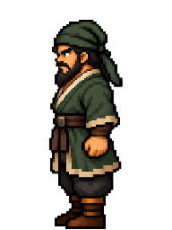
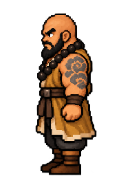
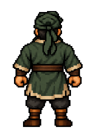
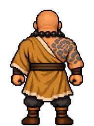
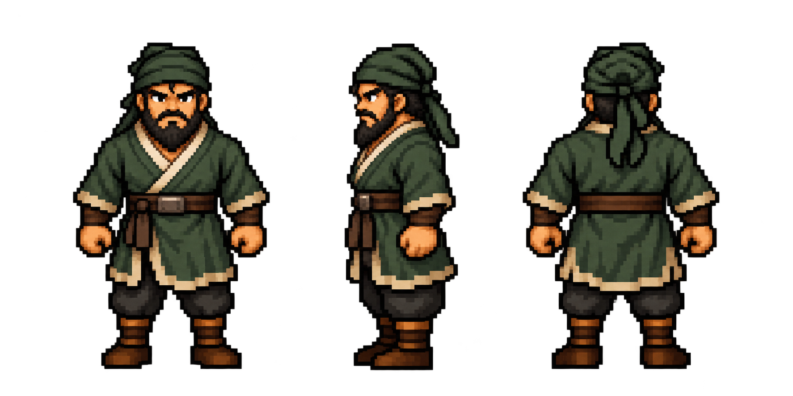
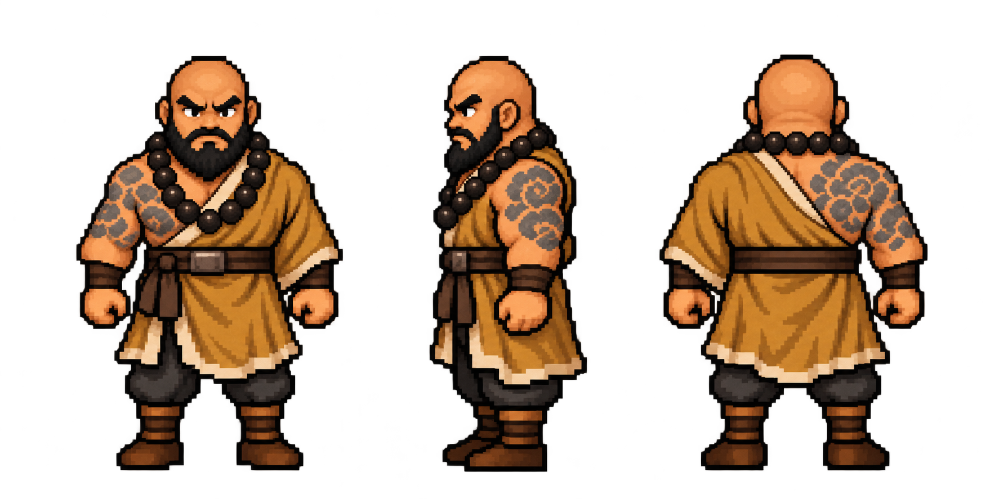

← View on game backgroundsLu Da → Lu Zhishen
The same broad, bearded man before and after taking monastic vows. Lu Da wears his olive garrison clothes and cloth cap. Lu Zhishen has a shaved head, prayer beads, an ochre robe and floral tattoos on his bare right shoulder and upper back. Both use the original Classic proportions, with a broader build than Song Jiang.
front

Lu Da
Lu Zhishenleft

Lu Da
Lu Zhishenback

Lu Da
Lu ZhishenOriginal source · Lu Da

Original source · Lu Zhishen

Classic style reference · Song Jiang

Standing design candidates. Original colours retained, one shared proportional scale, 192 × 256 cells. Right-facing views, movement and battle poses follow after the designs are settled.